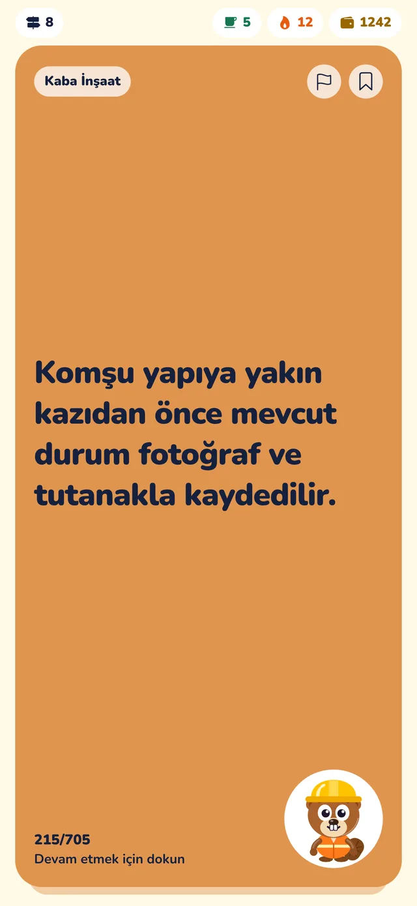
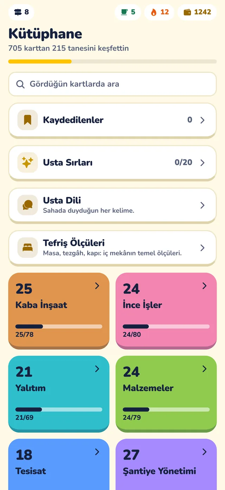
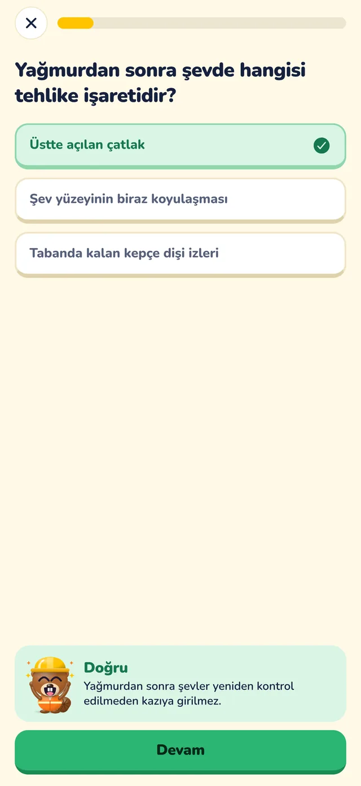
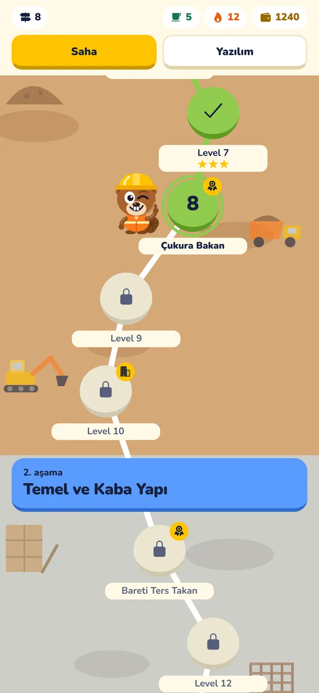

iPhone için şantiye bilgisi
Okulda öğretilmeyen, sahada öğrenilen.
Beton neden çatlar? Duşta su yalıtımı duvarda ne kadar yükselir? Saha 101 bu bilgileri tek cümlelik kartlar ve kısa sınavlarla, günde birkaç dakikada öğretir.
App Store'dan indirİndirmesi ücretsiz. Hesap açmadan, internetsiz çalışır.


Kimin için?
- Mimarlık, iç mimarlık ve inşaat öğrencileri
- Staja ya da ilk işine başlayacaklar
- Yeni başlayan saha mühendisleri
- Mimarlar ve iç mimarlar
Nasıl çalışır?

Dokun, öğren, biriktir
Her dokunuşta karışık kategoriden tek cümlelik bir saha bilgisi gelir: önce beton, sonra yalıtım, sonra seramik. Gördüğün her kart kütüphanede kendi kategorisine düşer, ilerlemeni orada görürsün.

Kısa sınavla pekiştir
Her level 5-8 soruluk bir sınav: çoktan seçmeli, doğru-yanlış, sıralama. Yanlış bildiğin sorular sonraki sınavlarda yeniden karşına çıkar.

Hafriyattan anahtar teslime
Level yolu bir binanın yapım sırasını izler. Geçtiğin her level binana malzeme ekler, her aşama yeni bir imalat ve yeni bir unvan getirir.
Sahada işine yarayanlar
Cep Araçları
Beton, seramik, boya, tuğla, sıva, donatı, kazı, merdiven ve eğim için hızlı hesaplar.
Usta Dili
Şantiyede duyduğun terimlerin anlamı ve İngilizce karşılığı.
Tefriş Ölçüleri
Mobilya, geçiş ve kullanım ölçüleri tek listede, aranabilir.
Bir Gün Şef
Şantiye krizlerinde bütçe, takvim ve ekip arasında karar ver, sonucunu gör.
Hata Avı
Kesit çizimlerinde yanlış uygulamayı bul, doğrusunu öğren.
Yazılım dersleri
Mesleğine göre AutoCAD, Revit, SketchUp, Netcad gibi 15 program için kısa adımlar.
Fiyat
Kartlar, kütüphane ve bütün level’lar ücretsiz. Premium günlük sınırı kaldırır.
Ücretsiz
- Kart akışı ve kütüphane
- Her gün 5 yeni level
- Günün sorusu, seri ve rozetler
- Yanlış cevap 1 çay; çay saatte bir demlenir
Premium
- Günlük level sınırı yok, çay sınırsız
- İSG ve Elektrik deneme sınavları
- Yanlış defteri ve konuya göre pratik
- Sınırsız Bir Gün Şef ve Şantiye Grubu
Fiyatlar Türkiye App Store fiyatlarıdır. Abonelik, dönem bitmeden en az 24 saat önce iptal edilmezse kendiliğinden yenilenir; App Store hesap ayarlarından yönetilir.
Sık sorulanlar
Hesap açmam gerekiyor mu?
Hayır. Hesap, giriş ya da sunucu yok. İlerlemen yalnızca telefonunda saklanır; istersen Ayarlar’dan dosya olarak iCloud Drive’a yedeklersin.
İnternet gerekiyor mu?
Hayır. Bütün içerik uygulamanın içinde gelir, şantiyede çekmeyen yerde de çalışır.
"Çay" ne demek?
Sınavda yanlış cevap bir bardak çaya mal olur. Çay saatte bir demlenir, bir level’ı ilk kez geçince bir çay geri gelir. Çay bitse de kartlar açık kalır. Premium’da çay sınırsızdır.
Android sürümü var mı?
Şimdilik yalnızca iPhone için. Android sürümü hazırlanıyor.
Hangi dillerde?
Türkçe, İngilizce, İtalyanca, İspanyolca, Fransızca ve Almanca.
Kartlardaki bilgilere ne kadar güvenebilirim?
Kartlar genel saha pratiğini anlatır. Bir ölçüyü ya da süreyi uygulamadan önce yürürlükteki yönetmelik, proje ve üretici föyüyle teyit et. Deneme sınavları resmî sınav değildir.